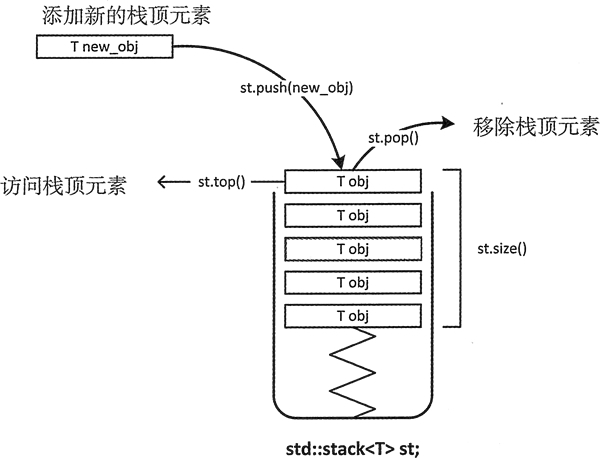
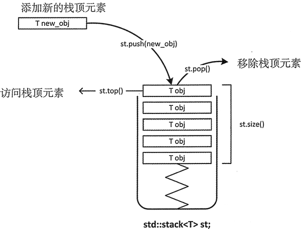

首页 > 编程笔记
C++ stack(STL stack)用法详解
容器适配器是一个封装了序列容器的类模板，它在一般序列容器的基础上提供了一些不同的功能。之所以称作适配器类，是因为它可以通过适配容器现有的接口来提供不同的功能。
stack<T>容器适配器中的数据是以 LIFO 的方式组织的，这和自助餐馆中堆叠的盘子、箱子中的一堆书类似。图 1 展示了一个理论上的 stack 容器及其一些基本操作。只能访问 stack 顶部的元素；只有在移除 stack 顶部的元素后，才能访问下方的元素。

图 1 stack 容器的基本操作
stack 容器有广泛的应用。例如，编辑器中的 undo (撤销)机制就是用堆栈来记录连续的变化。撤销操作可以取消最后一个操作，这也是发生在堆栈顶部的操作。编译器使用堆栈来解析算术表达式，当然也可以用堆栈来记录 C++ 代码的函数调用。下面展示了如何定义一个用来存放字符串对象的 stack 容器：
stack<T> 模板定义了拷贝构造函数，因而可以复制现有的 stack 容器：
stack<T> 模板也定义了复制和移动版的 operator=() 函数，因此可以将一个 stack 对象赋值给另一个 stack 对象。stack 对象有一整套比较运算符。比较运算通过字典的方式来比较底层容器中相应的元素。字典比较是一种用来对字典中的单词进行排序的方式。依次比较对应元素的值，直到遇到两个不相等的元素。第一个不匹配的元素会作为字典比较的结果。如果一个 stack 的元素比另一个 stack 的多，但是所匹配的元素都相等，那么元素多的那个 stack 容器大于元素少的 stack 容器。
我们可以用 stack 容器来实现一个简单的计算器程序。这个程序支持一些基本的加、 减、乘、除、幂操作。它们分别对应运算符 +、-、*、/、^。幂操作由定义在头文件 cmath 中的 pow() 函数提供。表达式以单行字符串的形式读入，可以包含空格。在解析字符串之前可以使用 remove() 算法来移除输入表达式中的空格，然后再执行这个表达式所包含的运算。下面我们会定义一个函数来获取运算符的优先级：
这个程序通过从左到右扫描的方式来分析输入表达式，并且会将运算符保存到 stack 容器 operators 中。操作数存放在 stack 容器 operands 中。所有的运算符都需要两个操作数，所以每执行一次运算，都需要获取一个 operators 栈顶的运算符，以及两个 operands 栈顶的操作数。运算由下面的函数执行：
注意，栈中操作数的顺序是相反的，因此得到的第一个操作数是运算的右操作数。operators 容器顶部的元素用来在 switch 中选择运算。在它不匹配任何一个 case 分支时，会拋出一个异常来表明这个运算符是无效的。
下面是这个程序的完整代码：
为了移除 exp 字符串中剩下的多余元素，可以用两个迭代器作为参数调用 erase()。其中第一个迭代器由 remove() 返回，指向字符串的最后一个有效元素的后面位置。第二个迭代器是字符串原始状态的结束迭代器。这两个迭代器指定范围的元素会被删除。
每个浮点操作数的值都是用定义在头文件 string 中的 stod() 函数获取的。这会将第一个字符串参数中的字符序列转换为 double 值。函数会从第一个表示有效浮点数的字符串的第一个字符开始，获取最长字符序列。第二个参数是一个整型指针，保存的是字符串中非数字部分第一个字符的索引。string 头文件中定义了 stod() 函数，它可以返回一个 float 值。 Stod() 会返回一个 long double 值。
因为所有的运算符都需要两个操作数，所以有效的输入字符串格式总是为 operand op operand op operand，等等。序列的第一个和最后一个元素都是操作数，每对操作数之间有一个运算符。因为有效表达式总是以操作数开头，所以第一个操作数在分析表达式的嵌套循环之前被提取出来。在循环中，输入字符串的运算符会被压入 operators 栈。在确认没有到达字符串末尾后，再从 exp 提取第二个操作数。这时，stod() 的第一个参数是从 index 开始的 exp 字符串，它是被压入 operators 栈的运算符后的字符。非数字字符串的第一个索引保存在i中。因为 i 是相对于 index 的，所以我们会将 index 加上 i 的值，使它指向操作数后的一个运算符(如果是 exp 中的最后一个操作数，它会指向字符串末尾的下一个位置)。
当 index 的值超过 exp 的最后一个字符时，会执行 operators 容器中剩下的运算符。如果没有到达字符串末尾，operators 容器也不为空，我们会比较 operators 栈顶运算符和 exp 中下一个运算符的优先级。如果栈顶运算符的优先级高于下一个运算符，就先执行栈顶的运算符。否则，就不执行栈顶运算符，在下一次循环开始时，将下一个运算符压入 operators 栈。通过这种方式，就可以正确计算出带优先级的表达式的值。
下面是一些示例输出：
stack<T>容器适配器中的数据是以 LIFO 的方式组织的，这和自助餐馆中堆叠的盘子、箱子中的一堆书类似。图 1 展示了一个理论上的 stack 容器及其一些基本操作。只能访问 stack 顶部的元素；只有在移除 stack 顶部的元素后，才能访问下方的元素。

图 1 stack 容器的基本操作
stack 容器有广泛的应用。例如，编辑器中的 undo (撤销)机制就是用堆栈来记录连续的变化。撤销操作可以取消最后一个操作，这也是发生在堆栈顶部的操作。编译器使用堆栈来解析算术表达式，当然也可以用堆栈来记录 C++ 代码的函数调用。下面展示了如何定义一个用来存放字符串对象的 stack 容器：
std::stack<std::string> words;stack 容器适配器的模板有两个参数。第一个参数是存储对象的类型，第二个参数是底层容器的类型。stack<T> 的底层容器默认是 deque<T> 容器，因此模板类型其实是 stack<typename T, typename Container=deque<T>>。通过指定第二个模板类型参数，可以使用任意类型的底层容器，只要它们支持 back()、push_back()、pop_back()、empty()、size() 这些操作。下面展示了如何定义一个使用 list<T> 的堆栈：
std::stack<std::string,std::list<std::string>> fruit;创建堆栈时，不能在初始化列表中用对象来初始化，但是可以用另一个容器来初始化，只要堆栈的底层容器类型和这个容器的类型相同。例如：
std::list<double> values {1.414, 3.14159265, 2.71828};
std::stack<double,std::list<double>> my_stack (values);
第二条语句生成了一个包含 value 元素副本的 my_stack。这里不能在 stack 构造函数中使用初始化列表；必须使用圆括号。如果没有在第二个 stack 模板类型参数中将底层容器指定为 list，那么底层容器可能是 deque，这样就不能用 list 的内容来初始化 stack；只能接受 deque。stack<T> 模板定义了拷贝构造函数，因而可以复制现有的 stack 容器：
std::stack<double,std::list<double>>copy_stack {my_stack}
copy_stack 是 my_stack 的副本。如你所见，在使用拷贝构造函数时，既可以用初始化列表，也可以用圆括号。堆栈操作
和其他序列容器相比，stack 是一类存储机制简单、所提供操作较少的容器。下面是 stack 容器可以提供的一套完整操作：- top()：返回一个栈顶元素的引用，类型为 T&。如果栈为空，返回值未定义。
- push(const T& obj)：可以将对象副本压入栈顶。这是通过调用底层容器的 push_back() 函数完成的。
- push(T&& obj)：以移动对象的方式将对象压入栈顶。这是通过调用底层容器的有右值引用参数的 push_back() 函数完成的。
- pop()：弹出栈顶元素。
- size()：返回栈中元素的个数。
- empty()：在栈中没有元素的情况下返回 true。
- emplace()：用传入的参数调用构造函数，在栈顶生成对象。
- swap(stack<T> & other_stack)：将当前栈中的元素和参数中的元素交换。参数所包含元素的类型必须和当前栈的相同。对于 stack 对象有一个特例化的全局函数 swap() 可以使用。
stack<T> 模板也定义了复制和移动版的 operator=() 函数，因此可以将一个 stack 对象赋值给另一个 stack 对象。stack 对象有一整套比较运算符。比较运算通过字典的方式来比较底层容器中相应的元素。字典比较是一种用来对字典中的单词进行排序的方式。依次比较对应元素的值，直到遇到两个不相等的元素。第一个不匹配的元素会作为字典比较的结果。如果一个 stack 的元素比另一个 stack 的多，但是所匹配的元素都相等，那么元素多的那个 stack 容器大于元素少的 stack 容器。
我们可以用 stack 容器来实现一个简单的计算器程序。这个程序支持一些基本的加、 减、乘、除、幂操作。它们分别对应运算符 +、-、*、/、^。幂操作由定义在头文件 cmath 中的 pow() 函数提供。表达式以单行字符串的形式读入，可以包含空格。在解析字符串之前可以使用 remove() 算法来移除输入表达式中的空格，然后再执行这个表达式所包含的运算。下面我们会定义一个函数来获取运算符的优先级：
inline size_t precedence(const char op)
{
if (op == '+' || op =='-')
return 1;
if (op == '*' || op == '/')
return 2;
if (op =='^')
return 3;
throw std:: runtime_error {string{"invalid operator: "} + op};
}
+ 和 - 的优先级最低，其次是 * 和 /，最后是 ^。运算符的优先级决定了它们在表达式中的执行顺序。如果参数是一个不支持的运算符，那么会拋出一个 runtime_error 异常对象。异常对象构造函数中的字符串参数，可以在 catch 代码块中通过调用对象的 what() 函数获得。这个程序通过从左到右扫描的方式来分析输入表达式，并且会将运算符保存到 stack 容器 operators 中。操作数存放在 stack 容器 operands 中。所有的运算符都需要两个操作数，所以每执行一次运算，都需要获取一个 operators 栈顶的运算符，以及两个 operands 栈顶的操作数。运算由下面的函数执行：
double execute(std::stack<char>& ops, std::stack<double>& operands)
{
double result {};
double rhs {operands.top()}; // Get rhs...
operands.pop(); // ...and delete from stack
double lhs {operands.top()}; // Get lhs...
operands.pop(); // ...and delete from stack
switch (ops.top()) // Execute current op
{
case '+':
result = lhs + rhs;
break;
case '-':
result = lhs - rhs;
break;
case '*':
result = lhs * rhs;
break;
case '/':
result = lhs / rhs;
break;
case '^':
result = std::pow(lhs, rhs);
break;
default:
throw std::runtime_error {string{"invalid operator: "} + ops.top()};
}
ops.pop(); // Delete op just executed
operands.push(result);
return result;
}
函数的参数是两个 stack 容器的引用。可以用 operands 容器的 top() 函数获取操作数。 top() 函数只能得到栈顶元素；为了访问下一个元素，必须通过调用 pop() 来移除当前栈顶元素。注意，栈中操作数的顺序是相反的，因此得到的第一个操作数是运算的右操作数。operators 容器顶部的元素用来在 switch 中选择运算。在它不匹配任何一个 case 分支时，会拋出一个异常来表明这个运算符是无效的。
下面是这个程序的完整代码：
// A simple calculator using stack containers #include <cmath> // For pow() function #include <iostream> // For standard streams #include <stack> // For stack<T> container #include <algorithm> // For remove() #include <stdexcept> // For runtime_error exception #include <string> // For string class using std::string; // Returns value for operator precedence inline size_t precedence(const char op) { if (op == '+' || op == '-') return 1; if (op == '*' || op == '/') return 2; if (op == '^') return 3; throw std::runtime_error {string {"invalid operator in precedence() function: "} + op}; } // Execute an operation double execute(std::stack<char>& ops, std::stack<double>& operands) { double result {}; double rhs {operands.top()}; // Get rhs... operands.pop(); // ...and delete from stack double lhs {operands.top()}; // Get lhs... operands.pop(); // ...and delete from stack switch (ops.top()) // Execute current op { case '+': result = lhs + rhs; break; case '-': result = lhs - rhs; break; case '*': result = lhs * rhs; break; case '/': result = lhs / rhs; break; case '^': result = std::pow(lhs, rhs); break; default: throw std::runtime_error {string{"invalid operator: "} + ops.top()}; } ops.pop(); // Delete op just executed operands.push(result); return result; } int main() { std::stack<double> operands; // Push-down stack of operands std::stack<char> operators; // Push-down stack of operators string exp; // Expression to be evaluated std::cout << "An arithmetic expression can include the operators +, -, *, /, and ^ for exponentiation." << std::endl; try { while (true) { std::cout << "Enter an arithmetic expression and press Enter - enter an empty line to end:" << std::endl; std::getline(std::cin, exp, '\n'); if (exp.empty()) break; // Remove spaces exp.erase(std::remove(std::begin(exp), std::end(exp), ' '), std::end(exp)); size_t index {}; // Index to expression string // Every expression must start with a numerical operand operands.push(std::stod(exp, &index)); // Push the first (lhs) operand on the stack while (true) { operators.push(exp[index++]); // Push the operator on to the stack // Get rhs operand size_t i {}; // Index to substring operands.push(std::stod(exp.substr(index), &i)); // Push rhs operand index += i; // Increment expression index if (index == exp.length()) // If we are at end of exp... { while (!operators.empty()) // ...execute outstanding ops execute(operators, operands); break; } // If we reach here, there's another op... // If there's a previous op of equal or higher precedence execute it while (!operators.empty() && precedence(exp[index]) <= precedence(operators.top())) execute(operators, operands); // Execute previous op. } std::cout << "result = " << operands.top() << std::endl; } } catch (const std::exception& e) { std::cerr << e.what() << std::endl; } std::cout << "Calculator ending..." << std::endl; }while 循环包含在一个 try 代码块中，这样就可以捕获抛出的任何异常。在 catch 代码块中，调用异常对象的成员函数 what() 会将错误信息输出到标准错误流中。在一个死循环中执行输入操作，当输入一个空字符串时，循环结束。可以使用 remove() 算法消除非空字符串中的空格。remove() 不能移除元素，而只能通过移动元素的方式来覆盖要移除的元素。
为了移除 exp 字符串中剩下的多余元素，可以用两个迭代器作为参数调用 erase()。其中第一个迭代器由 remove() 返回，指向字符串的最后一个有效元素的后面位置。第二个迭代器是字符串原始状态的结束迭代器。这两个迭代器指定范围的元素会被删除。
每个浮点操作数的值都是用定义在头文件 string 中的 stod() 函数获取的。这会将第一个字符串参数中的字符序列转换为 double 值。函数会从第一个表示有效浮点数的字符串的第一个字符开始，获取最长字符序列。第二个参数是一个整型指针，保存的是字符串中非数字部分第一个字符的索引。string 头文件中定义了 stod() 函数，它可以返回一个 float 值。 Stod() 会返回一个 long double 值。
因为所有的运算符都需要两个操作数，所以有效的输入字符串格式总是为 operand op operand op operand，等等。序列的第一个和最后一个元素都是操作数，每对操作数之间有一个运算符。因为有效表达式总是以操作数开头，所以第一个操作数在分析表达式的嵌套循环之前被提取出来。在循环中，输入字符串的运算符会被压入 operators 栈。在确认没有到达字符串末尾后，再从 exp 提取第二个操作数。这时，stod() 的第一个参数是从 index 开始的 exp 字符串，它是被压入 operators 栈的运算符后的字符。非数字字符串的第一个索引保存在i中。因为 i 是相对于 index 的，所以我们会将 index 加上 i 的值，使它指向操作数后的一个运算符(如果是 exp 中的最后一个操作数，它会指向字符串末尾的下一个位置)。
当 index 的值超过 exp 的最后一个字符时，会执行 operators 容器中剩下的运算符。如果没有到达字符串末尾，operators 容器也不为空，我们会比较 operators 栈顶运算符和 exp 中下一个运算符的优先级。如果栈顶运算符的优先级高于下一个运算符，就先执行栈顶的运算符。否则，就不执行栈顶运算符，在下一次循环开始时，将下一个运算符压入 operators 栈。通过这种方式，就可以正确计算出带优先级的表达式的值。
下面是一些示例输出：
An arithmetic expression can include the operators +, -, *, /, and ^ for exponentiation.
Enter an arithmetic expression and press Enter - enter an empty line to end:
2^0.5
result = 1.41421
Enter an arithmetic expression and press Enter - enter an empty line to end:
2.5e2 + 1.5e1*4
result = 310
Enter an arithmetic expression and press Enter - enter an empty line to end:
3*4*5 + 4*5*6 + 5*6*7
result = 390
Enter an arithmetic expression and press Enter - enter an empty line to end:
Calculator ending...
关注公众号「站长严长生」，在手机上阅读所有教程，随时随地都能学习。内含一款搜索神器，免费下载全网书籍和视频。

微信扫码关注公众号